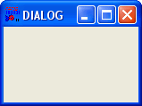
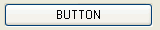

Die Widgets im Überlick
Die Widgets im Überlick
Die Widgets im Überlick
Die Widgets im Überlick
|  | DIALOG Ein Dialogfenster ist ein Widget, welches als Vaterwidget für alle weiteren Widgets (z.B. Buttons, Eingabefelder, usw.) agiert. Dieses Dialogfenster kann verschiedene Fensterstyles annehmen und besitzt eine Titelleiste mit einem frei definierbaren Text. Zusätzlich stellt dieses Widget auch Status- und Menübars bereit. Es können meherere Dialogfenster zur selben Zeit angelegt und angezeigt werden. |
|  | BUTTON Ein Button (zu deutsch: Knopf) stellt eine Schaltfläche auf einem Dialog bereit. Buttons werden verwendet, um bestimmte Aktionen auszulösen. Sie können mit einem Text (CAPTION-Attribut) ausgestattet werden. |
| IMAGEBUTTON Ein IMAGEBUTTON-Widget stellt eine zum Button-Widget äquivalente Schaltfläche auf einem Dialog bereit. Allerdings wird hier ein externes Bitmap-Bild (Dateiendung .BMP) anstatt eines Textes angezeigt. | |
| LABEL Labels (LABEL-Widgets) werden benutzt, um andere Widgets, wie z.B. Eingabefelder zu beschriften. Der jeweilige Text wird über das CAPTION-Attribut gelesen oder gesetzt. | |
| INPUT Ein INPUT-Widget stellt ein einzeiliges Texteingabefeld bereit. Diese Widgets werden verwendet, um beispielsweise Zahlen oder einzeilige Werte (z.B. Ortsnamen) einlesen zu können. Der Text kann über das TEXT-Attribut ausgelesen oder gesetzt werden, ebenso ist eine automatische Positionierung des Cursors bzw. des ausgewählten Textes mit dem SELPOS-Attribut möglich. Das SELECTION-Attribut gibt den selektierten Text zurück bzw. ersetzt ihn. | |
| PWD Ein PWD-Widget stellt ein einzeiliges Passworteingabefeld bereit. Diese Widgets werden verwendet, um beispielsweise Passwörter oder Werte maskiert abzufragen, d.h. dass die Werte vom Anwender selbst bzw. auf dem Bildschirm nicht sichtbar sind. Die Benutzung dieses Widgets ist äquivalent zu der des INPUT-Widgets. | |
| EDIT, EDIT_LINEWRAP Ein EDIT-Widget stellt ein mehrzeiliges Texteingabefeld bereit. Diese Widgets können als kleine Texteditoren zur Bearbeitung und Darstellung von gröfleren Texten auf einem Dialog verwendet werden. Die Benutzung dieses Widgets ist äquivalent zu der des INPUT-Widgets. Widgets vom Typ EDIT_LINEWRAP haben die Besonderheit, dass nur eine vertikale Scrollbar existiert. Alle Zeilen, die über die Breite des EDIT_LINEWRAP-Widgets hinausschieflen werden dabei automatisch umgebrochen. Beim Auslesen des Widgets sind allerdings nur wirkliche Zeilenumbrüche, die der Benutzer manuell eingegeben hat, vorhanden. Vorteil von EDIT_LINEWRAP-Widgets ist, dass diese Widgets für die Eingabe von flieflenden Texten, wie z.B. HTML-Code, äusserst effizient und ergonomischer sind. Der Text kann daher nur bei entsprechender Textlänge vertikal gescrollt werden. | |
 | OPTION Ein OPTION-Widget stellt eine so genannte "Checkbox" bereit. Dies ist ein Kästchen, welches mit einem Häcken versehen werden kann. OPTION-Widgets werden benutzt, um die Auswahl von Optionen zu ermöglichen, die der Benutzer ein- oder ausschalten kann. Mit Hilfe des CHECKED-Attributes kann der Häkchen-Status des OPTION-Widgets gesetzt bzw. ausgelesen werden (0 = gehakt, -1 nicht gehakt). |
| RADIO Ein RADIO-Widget stellt einen so genannten Radio-Button bereit. Dies ist ein rundes Knöpfchen, welches mit einem Punkt "gesetzt" (aktiviert) werden kann. RADIO-Widgets werden meistens zu visuellen Gruppen zusammengefügt, von denen jeweils nur ein Widget gesetzt werden kann (daher auch der Name, da die Funktionsweise der Knöpfe der eines alten Kofferradios nachempfunden ist!). Das Setzen bzw. Auslesen des Status, ob das Widget "gehakt" ist, ist äquivalent zu der des OPTION-Widgets. | |
| LIST, LIST_SORTED, LIST_MULTI, LIST_MULTISORTED LIST-Widgets sowie deren Derivate, LIST_SORTED, LIST_MULTI und LIST_MULTISORTED, stellen ein Listenauswahlfeld, wie beim build-in LISTBOX-Dialog, als Widget bereit. LIST-Widgets stellen ihre Einträge so dar wie sie angegeben wurden, LIST_SORTED-Widgets sortieren die Einträge alphabetisch. Zum Füllen bzw. Auslesen der LIST-Widgets wird das ITEMS-Attribut verwendet, welches eine Liste von Einträgen, die jeweils durch Pipe-Zeichen von einander getrennten sind, verwendet. Der ausgewählte Eintrag wird mit dem SELECTION-Attribut gelesen bzw. bestimmt. LIST_MULTI- und LIST_MULTISORTED-Widgets unterscheiden sich von den LIST- und LIST_SORTED-Widgets insofern, dass anstatt eines einzelnen Listeneintrags gleich mehrere oder alle Einträge selektiert werden können. Das SELECTION- bzw. SELINDEX-Attribut gibt in diesem Fall eine Liste an selektierten Einträgen zurück. | |
| COMBO COMBO-Widgets stellen eine Mischung aus INPUT-Widget und LIST-Widget dar. Es kann ein Text in das Eingabefeld editiert werden oder aus der Dropdown-Box, die durch Drücken des kleinen Buttons rechts neben dem Eingabefeld aufklappt, ausgewählt werden. Die Übergabe der Eintragsliste erfolgt äquivalent zum LIST- und LIST_SORTED-Widget. Zudem können alle Operationen wie Text lesen/setzen, Cursor setzen oder markierten Text lesen/ersetzen genau wie beim INPUT-Widget angewandt werden. | |
| STATIC_COMBO STATIC_COMBO-Widgets sehen genau wie COMBO-Widgets aus, allerdings lässt sich der gewählte Wert nicht editieren oder verändert. Es kann also nur aus einer statischen und vordefinierten Menge von Werten gewählt werden. | |
 | IMAGE Ein IMAGE-Widget ermöglicht das Anzeigen eines Bildes auf einem Dialogfenster. Das Bild wird mit Hilfe des IMAGE-Attributes gesetzt und automatisch auf die jeweilige Gröfle skaliert. Es können derzeit nur extern gespeicherte Bitmap-Bilder (Dateierweiterung .BMP) verwendet werden. |
| PROGRESS PROGRESS-Widgets (Progressbars) werden verwendet, den Fortschritt einer Operation visuell als einen prozentualen Anteil darzustellen. Der prozentuale Anteil des Fortschrittsbalkens kann auf einen beliebigen Wert gesetzt werden. | |
| GROUP GROUP-Widgets (Groupboxes) werden verwendet, um andere Widgets visuell zu gruppieren, d.h. eine gewisse Zusammengehörigkeit einer Widget-Gruppe darzustellen. Diese Widgets haben nur eine rein visuelle Funktion. Der Titel der Groupbox wird mit Hilfe des CAPTION-Attributes gesetzt. |